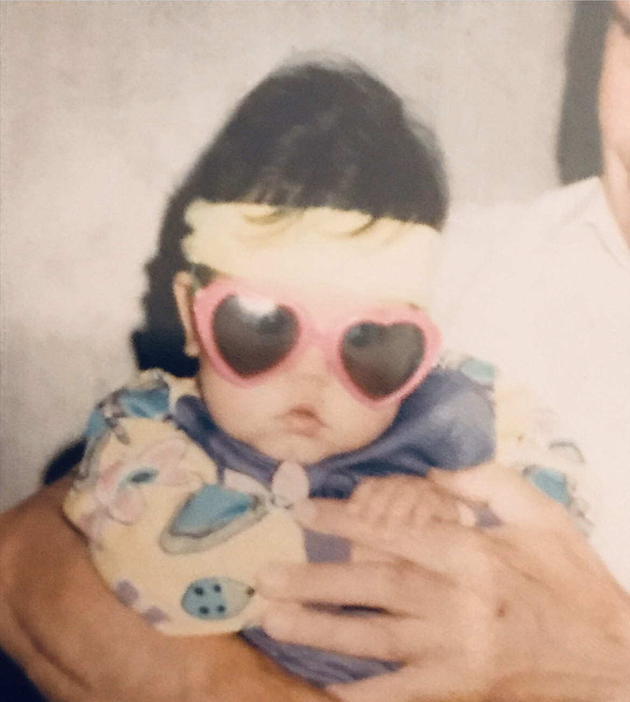

About Me
Teresa Who?

Can't see the haters because I am wearing love glasses since 1992

Geboren 1992, als Kind einer Frau, die den Kommunismus vermisst, und eines Mannes, der, obwohl er „weiß wie man Häuser baut die Erdbeben standhalten“, beruflich in Deutschland nie wieder richtig Fuß gefasst hat, nachdem die Import-/Export-Firma meines Onkels bankrott ging. Es kam wie es kommen musste: Scheidung. Ich war nicht traurig. Ich wusste, es ist besser so.
Anyway, obwohl das ein toller Einstieg für meine Memoiren wäre, glaube ich passt das hier weniger. Aber wenn ihr eine echte Antwort wollt darüber, wie ich denke, woher meine Motivation kommt, dann müsst ihr ein bisschen durch meine frühe Kindheit und Jugend.
Mit 12 Jahren bin ich mit Che Guevara Shirt rumgelaufen. #rebellisch #fuckcapitalism #diedaoben. Doch die Fragen, woher die Ungerechtigkeit in der Gesellschaft stammt, führten mich über die Jahre zu immer komplexeren Antworten. Neue Fragen taten sich auf. Antworten änderten sich. Mir wurde klar: Es würde immer mehr zu wissen geben.
Ich lernte Meinungen und Polemik von Fakten zu unterscheiden. Ich hatte Spaß daran, immer mehr zu verstehen, nicht alles sofort mit meinem Verständnis von Moral zu bewerten, sondern einfach nur zu hinterfragen, warum die Dinge sind wie sie sind.
Das führte mich letztendlich zum Studium der Betriebswirtschaft.
Oh, warum davor Friseurin? Wegen meines Hauptschulabschlusses. Danach hatte ich nicht viele Optionen. Aber rückblickend war es eine wirklich schöne Zeit und ich bin stolz darauf, ein Handwerk erlernt zu haben. Und danach nutzte ich die Möglichkeiten, die Deutschland bietet, um mich weiterzubilden: Realschule und Abi nachholen.
Mit der Freiheit im Studium ging ich etwas zu locker um. Ich verdiente gutes Geld in der Gastronomie und während Corona folgten endlose Versuche, die Prüfungen zu bestehen. Naja, es war jetzt nicht die beste Leistung. Aber eines ist klar: Ich werde mich nicht darauf reduzieren!
Diese Lebenseinstellung hat mich wohl zum Marketing gebracht. Es geht immer besser! Ich mag es, Dinge zu kreieren, darüber zu lernen, deren Potenzial zu sehen. Wie in meinem Leben, würde ich behaupten. Überall gibt es Möglichkeiten. Man muss sie nur finden wollen.